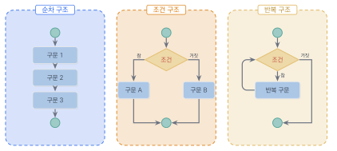
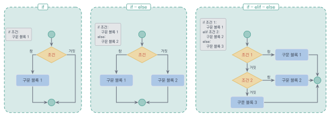
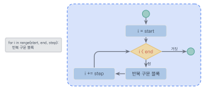
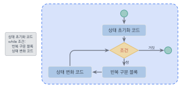

조건문과 반복문
이 장을 마치면
if·elif·else로 조건 분기 프로그램을 작성할 수 있다.- 논리 연산자를 활용해 복합 조건식을 표현할 수 있다.
for와while의 차이를 이해하고 상황에 맞게 선택할 수 있다.break·continue로 반복 흐름을 제어할 수 있다.- 반복문과 조건문을 조합한 실용 프로그램을 설계할 수 있다.
앞 장에서 변수와 연산자, 문자열을 배웠다면, 이 장에서는 프로그램에 "두뇌"를 부여하는 방법을 배운다. 지금까지 작성한 프로그램은 위에서 아래로 한 줄씩 순서대로 실행되는 단순한 구조였다. 하지만 현실의 문제를 해결하려면 "어떤 조건이 만족되면 이것을 하고, 그렇지 않으면 저것을 하라"와 같은 판단이 필요하고, "이 작업을 100번 반복하라"와 같은 반복도 필요하다. 조건문과 반복문은 바로 이러한 흐름 제어를 가능하게 해주는 핵심 구조이다.
이 장에서는 먼저 순차적 실행 구조와 제어문의 개념을 이해한 후, if 문, if-else 문, if-elif-else 문 등 다양한 조건문을 배운다. 조건문에서 핵심적인 역할을 하는 블록과 들여쓰기의 개념도 함께 살펴본다. 이어서 for 문과 while 문을 이용한 반복 처리를 익히고, break와 continue를 사용하여 반복의 흐름을 세밀하게 제어하는 방법까지 배운다. 조건문과 반복문을 자유자재로 조합할 수 있게 되면, 여러분은 훨씬 더 다양하고 복잡한 문제를 프로그램으로 해결할 수 있게 될 것이다.
3.1 순차문과 제어문
우리가 지금까지 작성한 파이썬 프로그램은 먼저 나타나는 코드가 먼저 실행되는 구조이다. 이러한 실행구조는 파이썬뿐만 아니라 대부분의 프로그래밍 언어들이 가지는 일반적인 실행구조이다.
이처럼 먼저 나타나는 순서에 따라 실행되는 프로그래밍 언어의 문장을 순차문sequential statements이라 한다. 예를 들어서 다음 코드를 살펴보자. 최초 상태의 num 값이 100이므로 100을 출력한 후, num = num + 100 명령이 실행되어 num 값은 200이 된다. 다시 한번 num = num + 100 명령이 실행되면 num 값에는 다시 100이 더해져서 최종적으로 300이 된다. 따라서 num 값은 순차적으로 100, 200, 300으로 바뀌는 것을 출력문으로 확인해 볼 수 있다. 이렇게 파이썬의 명령문은 먼저 나타난 문장이 먼저 실행되는 구조를 가지는데 이것을 순차적 실행구조라고 한다.
num = 100
print('num =', num)
num = num + 100
print('num =', num)
num = num + 100
print('num =', num)num = 100 num = 200 num = 300
이러한 프로그램의 논리적인 구조를 표현하는 데 자주 이용되며, 흐름도flow chart라고 한다. 앞으로도 우리는 프로그램의 수행 절차와 과정을 흐름도를 이용하여 종종 표현할 것이다.
그러나 프로그래밍 언어에서는 항상 순차적인 흐름만 있는 것은 아니다. 특정한 조건이 만족되는 경우에만 특정 명령어가 수행되도록 할 수도 있고 조건에 따라 서로 다른 일을 해야 할 때도 있다. 또한 같은 작업을 여러 번 반복해야 할 때도 있다. 이렇게 프로그램의 흐름을 제어하는 명령을 제어문control statement이라 한다.
제어문에는 크게 두 가지 종류가 있다. 첫째는 조건문conditional statement으로, if, if-else 문과 같이 조건에 따라 실행할 코드를 선택하는 구문이다. 둘째는 반복문loop statement으로, for, while 문과 같이 특정 코드를 여러 번 반복 실행하는 구문이다. 그리고 break와 continue처럼 반복문의 흐름 자체를 변경하는 명령문도 있다. 이 장에서는 조건문과 반복문을 함께 살펴보자.

그림 3.1에서 보듯이, 프로그램의 실행 구조는 순차, 조건, 반복의 세 가지로 구성된다.
사실 모든 프로그램은 이 세 가지 구조 — 순차, 조건, 반복 — 의 조합으로 이루어진다. 아무리 복잡한 프로그램이라도 결국은 이 세 가지 구조를 적절히 결합하여 만들어진 것이다. 따라서 이 장에서 배우는 내용은 프로그래밍의 근간을 이루는 매우 중요한 개념이다.
순차문은 코드가 위에서 아래로 순서대로 실행되는 가장 기본적인 구조이다. 조건문은 주어진 조건의 참/거짓에 따라 실행 흐름을 분기하여 서로 다른 코드를 실행하는 구조이다. 반복문은 특정 코드 블록을 조건이 만족되는 동안 여러 번 반복 실행하는 구조이다. 이 세 가지 구조의 조합으로 모든 프로그램의 흐름을 제어할 수 있다.
3.2 if 조건문
이번 절에서는 파이썬의 조건문conditional statement에 대해서 알아보자. 조건문은 특정한 조건에 따라 실행 내용이 달라지는 문장 형태를 말한다. 조건문의 이해를 돕기 위해서 다음과 같은 경우를 살펴보자.
일상생활에서 우리는 끊임없이 조건에 따른 판단을 한다. "비가 오면 우산을 가져간다", "시험 점수가 90점 이상이면 A학점을 받는다", "나이가 20세 미만이면 청소년 할인을 받는다" 등이 모두 조건에 따른 판단의 예이다. 프로그래밍에서도 마찬가지로 특정한 조건을 만족할 때에만 어떤 일을 하게 해야 한다면 조건문을 사용한다. 이때 우리가 사용할 수 있는 것이 if 문이다.
if 문의 기본 구조
조건문의 사용법은 다음과 같다. 문장의 처음은 조건문을 선언하는 키워드 if로 시작한다. 그 뒤에 조건식과 콜론(:)이 나타난다. 콜론이 나타난 뒤에는 설정한 조건이 참일 때에 실행될 코드들을 입력해 주면 된다. 이때, 참일 경우 실행되는 코드는 반드시 들여쓰기indentation를 해야 한다. 이것은 if 조건문에 속한 하위 블록block임을 표시하는 것이다.
이제 구체적인 예를 통해 살펴보자. 나이가 20세 미만이면 ‘청소년 할인’을 출력하는 프로그램을 작성해 보자.
age = 18
if age < 20:
print('Youth discount')Youth discount
age 값이 18이므로 age < 20 조건식이 참(True)이 되어 print('Youth discount') 문장이 실행된다. 반면, age = 24와 같이 age 값이 20 이상의 값이 되면 조건식이 거짓(False)이 되어 아무런 출력도 없다. 즉, 흐름도 상에서 if 문의 다음에 실행문이 있지만, 조건이 참(True)이 아니므로 이 블록을 건너뛰게 된다.

그림 3.2의 가장 왼쪽 경우가 바로 이 단순한 if 문 구조이다. 이 외에도 두 번째와 세 번째 경우로 제시된 if-else 문과 if-elif-else 문과 같은 방식으로도 조건 실행 구조를 만들 수 있는데, 이들을 차례로 살펴볼 것이다.
조건문과 블록
조건문에서 실행될 특정 코드 덩어리를 블록block이라고 한다. 블록은 흔히 코드 블록이라고도 하는데 소스 코드에서 함께 묶을 수 있는 코드의 덩어리를 말한다. 새롭게 나타나는 블록은 현재의 들여쓰기보다 더 깊이 들여서 써야 한다.
파이썬에서 들여쓰기는 매우 중요한 의미를 갖는다. 이 부분이 C/C++이나 Java, Pascal 등의 전통적인 프로그래밍 언어와 다른 매우 특징적인 부분이다. 이들 언어가 블록을 열거나 닫는 괄호 표현을 쓴다면, 파이썬은 괄호가 아니라 들여쓰기를 통해서 블록을 표기하는 것이다. 이러한 표현은 파이썬 코드를 매우 간결하면서도 깔끔하게 만든다.
다음 두 개의 프로그램을 통해 들여쓰기의 중요성을 살펴보자.
age = 18
if age < 20:
print('Youth discount')
print('Welcome!')위 코드에서 age 값이 18이므로 if 문이 참이 되어 'Youth discount'가 출력된다.
print('Welcome!')은 if 문의 실행 블록이 아니므로(들여쓰기가 되어 있지 않으므로) if 문에 영향을 받지 않고 언제나 실행된다.
따라서 'Youth discount'와 'Welcome!' 모두 출력된다.
그러나 만약 age = 24로 바꾸면 조건식이 거짓이 되어 ‘Youth discount’는 출력되지 않고 ‘Welcome!’만 출력된다. 즉, print('Welcome!') 문은 if 문의 실행 블록이 아니므로 if 문에 영향을 받지 않고 언제나 실행되는 부분이다.
age = 18
if age < 20:
print('Age:', age)
print('Youth discount')
print('Welcome, young person!')위 코드에서는 3개의 print 문이 모두 들여쓰기 블록 내에 있기 때문에 age 값이 18이 되면 3개의 print 문이 모두 출력된다. 반면, age 값이 24가 되면 3개의 print 문이 모두 출력되지 않는다.
파이썬에서 들여쓰기는 선택 사항이 아니라 문법의 일부이다. 다음과 같이 들여쓰기 없이 작성하면 오류가 발생한다.
if True:
print("Hello") # IndentationError: expected an indented block
올바른 코드는 다음과 같다.
if True:
print("Hello")
if 문 다음에 들여쓰기된 코드들이 하나의 블록을 형성한다. 동일한 블록 내에서는 들여쓰기의 칸 수가 반드시 일치해야 하며, 일정하지 않으면 IndentationError가 발생한다. 파이썬 표준 코드 문서인 PEP 8에서는 들여쓰기 크기로 탭(tab)이 아닌 스페이스 4칸을 권장한다. 대부분의 파이썬 IDE에서는 자동 들여쓰기를 제공한다.
if-else 문
조건이 참일 때와 거짓일 때 각각 다른 코드를 실행하려면 if-else 문을 사용한다. 앞에서 익힌 if 문은 조건이 참일 때만 특정 코드를 실행하고, 거짓일 때는 아무것도 하지 않았다. 하지만 현실에서는 "조건이 만족되면 A를 하고, 그렇지 않으면 B를 하라"와 같이 두 가지 경우를 모두 처리해야 하는 상황이 훨씬 많다.
예를 들어, 시간이 12시가 안 되면 ‘오전입니다’, 12시 이후이면 ‘오후입니다’를 출력하는 기능을 만들어 보자. 이 두 조건은 서로 배타적 관계exclusive relation에 있다. 하나가 참이면 다른 하나는 반드시 거짓이다. 이런 조건의 처리는 if-else 문으로 구현할 수 있다.
hour = int(input('Enter the hour: '))
if hour < 12:
print('It is AM.')
else:
print('It is PM.')Enter the hour: 10 It is AM.
이 코드의 흐름은 hour 값이 12보다 작은지 검사하여 참인지 거짓인지에 따라 왼쪽 혹은 오른쪽 흐름을 선택하는 간단한 제어 흐름이 된다.
if-else 문의 다른 예로 임의의 정수가 음수인지 판단하는 프로그램을 작성할 수 있다. 임의의 정수가 0보다 작으면 음수이고 그렇지 않으면 음수가 아니다. 또한 짝수와 홀수를 판별하는 것도 if-else 문으로 표현하기에 적당하다. 짝수와 홀수 역시 배타적 관계에 있기 때문이다.
num = int(input('Enter a positive integer: '))
if num % 2 == 0:
print(num, 'is even.')
else:
print(num, 'is odd.')if-elif-else 문
세 가지 이상의 조건을 검사해야 할 때는 elif를 사용한다. elif는 "else if"를 줄인 것으로, 앞의 조건이 거짓일 때 새로운 조건을 검사한다.
score = int(input('Enter score: '))
if score >= 90:
grade = 'A'
elif score >= 80:
grade = 'B'
elif score >= 70:
grade = 'C'
elif score >= 60:
grade = 'D'
else:
grade = 'F'
print(f'Grade: {grade}')Enter score: 85 Grade: B
위 코드에서 score가 85이면 첫 번째 조건 score >= 90은 거짓이므로 건너뛰고, 두 번째 조건 score >= 80이 참이므로 grade = 'B'가 실행된다. 나머지 elif와 else는 더 이상 검사하지 않고 건너뛴다. elif는 필요한 만큼 여러 번 사용할 수 있으며, else는 위의 어떤 조건도 만족하지 않을 때 실행된다.
여기서 중요한 점은 elif 문의 조건을 검사하는 순서이다. 파이썬은 위에서 아래로 순서대로 조건을 검사하며, 처음으로 참이 되는 조건의 블록만 실행하고 나머지는 모두 건너뛴다. 따라서 조건의 순서를 잘 설계해야 올바른 결과를 얻을 수 있다.
간단한 if-else로 변수 하나에 값을 할당하는 경우, 파이썬은 조건 표현식conditional expression이라는 한 줄 문법을 제공한다. 다른 언어의 삼항 연산자(?:)에 해당한다.
age = 18 status = 'minor' if age < 20 else 'adult' # 'minor' parity = 'even' if n % 2 == 0 else 'odd'
값1 if 조건 else 값2 형태로 읽으며, 조건이 참이면 값1, 거짓이면 값2가 된다. 두 가지 값 중 하나를 고르는 단순한 상황에서 코드가 훨씬 짧아지지만, 조건이 복잡해지면 가독성이 떨어지므로 일반 if-else 문을 쓰는 편이 낫다.
복합 조건식과 중첩 조건문
앞 장에서 배운 비교 연산자와 논리 연산자를 조합하면 더 복잡한 조건식을 만들 수 있다. 예를 들어, 특정한 정수 \(n\) 값이 3의 배수이면서 동시에 5의 배수인지를 알아보려 하는 경우 (n % 3) == 0 and (n % 5) == 0과 같이 두 개의 조건식을 and로 묶은 복합 조건식을 사용할 수 있다. 혹은 어떤 학생의 시험점수 score가 90을 넘고 100 이하일 때 ‘A’ 등급을 부여하고자 하는 경우 (score > 90) and (score <= 100)과 같은 조건식을 사용할 수 있다.
number = int(input('Enter an integer: '))
if number % 3 == 0 and number % 5 == 0:
print(number, 'is a multiple of both 3 and 5.')
elif number % 3 == 0:
print(number, 'is a multiple of 3.')
elif number % 5 == 0:
print(number, 'is a multiple of 5.')
else:
print(number, 'is neither a multiple of 3 nor 5.')조건문 안에 또 다른 조건문을 넣는 중첩 조건문도 가능하다. 편의상 바깥의 if-else 문을 외부 if-else 문이라 하고 else 문 내의 if-else 문을 내부 if-else 문이라 하자. 중첩 조건문은 여러 단계의 판단이 필요할 때 사용하지만, 너무 깊이 중첩하면 코드의 가독성이 떨어지므로 적절한 수준에서 사용하는 것이 좋다. 일반적으로 3단계 이상의 중첩은 피하고, elif를 활용하여 평탄한 구조로 작성하는 것이 권장된다. 조건문의 다양한 활용 예제는 Al Sweigart의 『Automate the Boring Stuff with Python』에서 풍부하게 다루고 있다.
age = int(input('Enter your age: '))
if age >= 20:
if age >= 65:
print('Senior discount')
else:
print('Regular adult')
else:
print('Minor')나이로 22세를 입력하면 외부 if 조건 age >= 20을 만족하지만 내부 조건 age >= 65는 만족하지 않으므로 Regular adult가 출력된다.
Enter your age: 22 Regular adult
3.3 for 반복문
프로그래밍에서 반복문loop이란 특정한 작업을 여러 번 되풀이하여 수행할 때 사용하는 구문이다. 예를 들어, ‘Welcome to everyone!!’을 5회 반복하는 프로그램이 필요하다고 하자. 반복문을 사용하지 않고 5번 반복해 출력하려면 print() 함수를 5번에 걸쳐 사용하면 된다. 지금은 5회 반복이라 문제가 없어 보이지만, 같은 문장을 1,000회 반복하는 프로그램이 필요하다면 어떻게 될까? 같은 문장을 1,000줄에 걸쳐 적어야 하므로 코드가 매우 비효율적일 것이며, 읽기도 힘들 것이다. 이러한 문제는 반복문을 사용하면 아주 효과적으로 해결할 수 있다.
파이썬에는 for 문과 while 문 두 종류의 반복문이 있다. for 문은 반복의 횟수가 미리 정해져 있는 경우에 주로 사용하고, while 문은 반복 횟수는 알지 못하지만 반복하는 조건이 명확한 경우에 주로 사용한다. 우선 for 반복문에 대해 알아보자.
for-in-range() 구문
for 문은 반복문 키워드 for를 사용하며, 그 다음에 값이 바뀌게 되는 제어변수loop variable(루프 변수)가 나타난다. 제어변수 다음에는 in 키워드가 오고 이어서 시퀀스나 range() 함수가 나타난다. for 문은 if 문과 마찬가지로 마지막에 콜론(:)이 나타나야 한다. 그리고 반복될 블록은 들여쓰기를 해야 한다.
for i in range(5):
print('Welcome to everyone!!')Welcome to everyone!! Welcome to everyone!! Welcome to everyone!! Welcome to everyone!! Welcome to everyone!!
range(5)는 0부터 4까지의 정수열 0, 1, 2, 3, 4를 생성한다. for 문은 이 값들을 하나씩 제어변수 i에 할당하면서 들여쓰기 블록을 반복 실행한다. 위 코드에서는 i의 값을 사용하지 않고 단순히 5번 반복만 하고 있다. 만일 "Welcome to everyone!!"을 10번 반복하고자 한다면 range() 괄호 안의 값만 10으로 고쳐주면 된다.

그림 3.3에서 보듯이, 제어변수 i가 조건을 만족하는 동안 블록을 반복 실행한다.
이처럼 반복문 for나 while 문 내에서 사용되는 변수는 i, j, k, l,...과 같은 알파벳 문자를 할당하는 것이 프로그래밍 언어의 오랜 관습이다. 이러한 변수를 C나 Java에서는 루프loop 제어변수라고 한다. 위 반복문에서 새롭게 할당되는 변수 i는 실행문에서 사용되지 않는 루프변수이므로 다음과 같이 언더스코어(_)를 대신 넣어서 익명화시킬 수 있다.
range() 함수
여러 개의 값을 반복적으로 생성하는데 사용되는 range() 함수를 먼저 알아보자. range는 구간 혹은 범위를 뜻하며, range() 함수는 특정한 구간의 정수 열sequence을 생성한다. 예를 들어, range(5)라고 하면 0에서부터 5가 되기 전까지의 정수인 0, 1, 2, 3, 4의 5개 정수열을 차례로 생성한다. range() 함수는 다양한 형태로 호출할 수 있다.
range(n)은 0부터 n-1까지 n개의 정수를 생성한다. range(start, stop)은 start부터 stop-1까지의 정수를 생성한다. range(start, stop, step)은 start부터 stop-1까지 step만큼의 간격으로 정수를 생성한다. 간격 값을 생략하면 디폴트로 1이 지정된다.
>>> list(range(5)) [0, 1, 2, 3, 4] >>> list(range(1, 6)) [1, 2, 3, 4, 5] >>> list(range(0, 10, 2)) [0, 2, 4, 6, 8] >>> list(range(10, 0, -1)) [10, 9, 8, 7, 6, 5, 4, 3, 2, 1] >>> list(range(-2, -10, -2)) [-2, -4, -6, -8]
양수 간격 값을 사용할 때는 range(0, 5, 1)과 같이 반드시 시작하는 값이 종료 조건의 값보다 작아야 하며, 음수 간격 값을 사용할 때는 range(-2, -10, -2)와 같이 시작 값이 반드시 종료값보다 커야 한다. range() 함수는 정수 값을 인자로 가질 수 있지만 실수 값은 사용할 수 없다는 점도 기억하자.
반복문의 활용: 누적 덧셈
지금까지 실습으로 range() 함수의 인자들을 어떻게 설정하느냐에 따라 for 문에서 어떤 범위의 값을 얻을 수 있는지를 살펴보았다. 이제 이 내용을 바탕으로 본격적으로 반복문을 활용해 보자. 가장 먼저 1에서 10까지 정수의 합을 구해보도록 하자. 이 기능을 구현하기 위해서는 range(1, 11)을 통해서 얻고 이때 얻어진 루프 제어변수를 누적해서 더하기 위한 s 변수를 선언하고 누적하는 다음과 같은 코드를 작성해 보자.
s = 0
for i in range(1, 11):
s = s + i
print('Sum from 1 to 10:', s)Sum from 1 to 10: 55
이 코드를 살펴보면 s에 i 값을 누적하여 더하는 코드가 있는데 이렇게 누적하려면 초기 할당값이 필요하다. 이러한 누적 패턴은 알고리즘의 기초에 해당하며 Aditya Bhargava의 『Grokking Algorithms』에서 그림과 함께 직관적으로 설명하고 있다. 따라서 s = 0으로 선언하여 최초의 s에는 0을 할당한 뒤, for 루프가 수행될 때마다 증가하는 i 값을 누적하여 \(1 + 2 + 3 + 4 + 5 + 6 + 7 + 8 + 9 + 10\)을 구한다.
이와 같은 누적 덧셈을 처음 접하는 독자들은 위의 코드가 쉽게 잘 이해되지 않을 수 있을 것이다. 이럴 때는 중간에 i와 s 값이 어떻게 변화하는가를 살펴보는 것이 동작이 제대로 이루어지는지 확인하는 데 도움이 된다.
누적 연산에서는 누적 변수의 초기화가 매우 중요하다. 덧셈의 누적에서는 초기값을 0으로, 곱셈의 누적(예: 팩토리얼)에서는 초기값을 1로 설정해야 한다. 초기화를 잊으면 예상치 못한 결과가 나오거나 오류가 발생한다.
팩토리얼 구하기
반복문을 이용하면 팩토리얼factorial도 쉽게 계산할 수 있다. 팩토리얼은 \(n\)이 임의의 자연수일 때 1에서 \(n\)까지의 모든 자연수를 곱한 값이다. 팩토리얼의 기호는 다음 수식과 같이 !(느낌표)를 사용한다.
\[ n! = n \times (n-1) \times \cdots \times 3 \times 2 \times 1 \]
우리는 이미 \(0 + 1 + 2 + 3 + \cdots + n\)의 결과를 얻는 방법을 알아보았으므로 \(1 \times 2 \times 3 \times \cdots \times n\)의 결과를 얻는 방법 역시 쉽게 구현할 수 있을 것이다. 앞의 누적 덧셈 기능에서 s의 초기 값을 0으로 두었다면 팩토리얼 값을 저장할 변수 fact의 초기값은 1로 두어야 한다. 그리고 덧셈(+) 연산 대신 곱셈(*) 연산을 for 문에서 사용하면 된다.
n = int(input('Enter a number: '))
fact = 1
for i in range(1, n+1):
fact = fact * i
print(f'{n}! = {fact}')Enter a number: 5 5! = 120
for-in 리스트/문자열 순회
for 문은 range() 함수 외에도 리스트나 문자열 등의 시퀀스를 직접 순회할 수 있다. for \dash{} in 구문은 반복문 키워드 for와 in 사이에 계속 새롭게 할당할 변수 n을 선언하고 in 뒤에 리스트 자료형을 넣어 리스트를 차례대로 순회하는 실행이 가능하다. 리스트에 관한 상세한 설명은 뒤의 장에서 다루겠지만, 여기서는 기본적인 사용법만 이해하면 충분하다.
# 리스트 순회
fruits = ['apple', 'banana', 'grape']
for fruit in fruits:
print(fruit, end=' ')
print()
# 문자열 순회
for ch in 'Python':
print(ch, end=' ')
print()apple banana grape P y t h o n
리스트뿐만 아니라 문자열도 문자들의 열이므로 반복 가능하다. 문자열을 for \dash{} in 구문 뒤에 문자열을 위치시켜 문자 단위로 분리해 순회할 수 있다. 위의 예제에서 ‘Python’이라는 문자열은 ['P', 'y', 't', 'h', 'o', 'n']이라는 반복가능 열이므로 각 문자가 하나씩 출력되는 것을 확인할 수 있다.
이중 for 루프
for 문 안에 또 다른 for 문을 넣는 것을 이중 반복문nested loop 혹은 중첩 for 문이라 한다. 이중 반복문은 구구단 출력, 표 형태의 데이터 처리, 2차원 패턴 그리기 등에 자주 사용된다.
구구단을 출력하는 프로그램을 만들어 보자. 우선 구구단의 구조에 대해 살펴보면, 2단에서 9단까지 있어 단은 range(2, 10)으로 표현할 수 있다. 그리고 각 단마다 단의 수에 1에서 9를 곱한 결과가 필요하다. 곱해지는 수는 range(1, 10)이 된다. 따라서 이를 구현하기 위해서는 for 문 안에 for 문을 다시 넣는 중첩 for 문이 필요하다.
for i in range(2, 10):
for j in range(1, 10):
print(f'{i}*{j}={i*j:2d}', end=' ')
print()외부 for 루프가 한 번 실행될 때마다 내부 for 루프가 처음부터 끝까지 전부 실행된다. 따라서 전체 반복 횟수는 외부 루프의 횟수와 내부 루프의 횟수를 곱한 것이 된다. 위 코드에서는 외부 루프가 8번(2단 9단), 내부 루프가 9번(1 9)이므로 총 \(8 \times 9 = 72\)번의 곱셈과 출력이 수행된다.
팩토리얼을 구하는 코드에서 n 값을 50으로 바꾸면 다음과 같은 엄청나게 큰 수를 출력한다. C나 Java와 같은 프로그래밍 언어는 정수의 크기가 4바이트 형으로 정해져 있어서 일정한 크기 이상의 정수는 표현할 수 없다. 이와 달리 파이썬은 정수 표현의 한계가 없다. 이 점이 파이썬의 또 다른 큰 장점이다.
3.4 while 반복문과 흐름 제어
앞 절에서 살펴본 for 문은 range()나 리스트처럼 미리 정해진 항목을 차례로 꺼내어 정해진 횟수만큼 반복할 때 자연스럽다. 그러나 실제 프로그래밍에서는 언제 끝날지 미리 알 수 없는 반복이 자주 등장한다. 사용자가 종료 명령을 입력할 때까지 메뉴를 계속 보여 주거나, 어떤 값이 임계치를 넘을 때까지 계산을 거듭하거나, 네트워크에서 자료가 모두 도착할 때까지 기다리는 경우가 그 예이다. 이렇게 횟수가 아닌 조건으로 반복을 제어해야 할 때 사용하는 도구가 while 문이다.
이 절에서는 while 문의 기본 구조와 동작 방식을 살펴보고, 무한 반복을 안전하게 빠져나오기 위한 break와 continue 같은 흐름 제어 키워드를 함께 다룬다. 또한 while 문이 잘못 작성되었을 때 흔히 마주치는 무한 루프의 원인과 그 해결 방법도 짚어 본다.
다만 한 가지 미리 알아 둘 점은, for와 while이 표현 방식만 다를 뿐 본질적으로는 서로 변환할 수 있다는 사실이다. for 문은 카운터를 자동으로 갱신해 주는 while 문의 축약 형태로 볼 수 있고, 반대로 while 문은 조건식과 카운터를 직접 다루는 for 문이라고 생각해도 무방하다. 따라서 두 반복문 중 어느 쪽을 쓸지는 옳고 그름의 문제가 아니라, 어느 쪽이 의도를 더 자연스럽게 드러내느냐의 문제이다.
while 문의 기본 구조
while 문은 조건식이 참인 동안 블록을 반복 실행한다. for 문이 반복 횟수가 미리 정해져 있는 경우에 주로 사용되는 반면, while 문은 반복 횟수가 미리 정해지지 않고 특정 조건을 만족하는 동안 계속 반복할 때 주로 사용한다. 예를 들어, "사용자가 0을 입력할 때까지 숫자를 계속 입력받아 합산하라"와 같은 상황에서는 사용자가 언제 0을 입력할지 미리 알 수 없으므로 while 문이 적합하다.
while 문의 구조는 다음과 같다. while 키워드 뒤에 조건식이 오고, 콜론(:)으로 끝난다. 그 아래에 들여쓰기된 블록이 반복 실행될 코드이다.
i = 1
while i <= 5:
print(i, end=' ')
i += 1
print()1 2 3 4 5
while 문은 먼저 조건식 i <= 5를 검사한다. 조건이 참이면 블록을 실행하고 다시 조건을 검사하는 과정을 반복한다. i가 6이 되면 조건이 거짓이 되어 반복이 종료된다. 여기서 중요한 점은 블록 안에서 i += 1을 통해 제어변수를 직접 변경해야 한다는 것이다. for 문에서는 제어변수가 자동으로 변경되지만, while 문에서는 프로그래머가 직접 변경해야 한다.

그림 3.4에서 보듯이, 조건이 거짓이 될 때까지 블록을 반복 실행한다.
while 문에서 반복 조건이 항상 참이면 무한 루프infinite loop에 빠진다. 예를 들어 위 코드에서 i += 1을 빠뜨리면 i는 영원히 1인 채로 남아서 i <= 5가 항상 참이 되어 프로그램이 끝나지 않는다. 반드시 루프 안에서 조건이 거짓이 되도록 변수를 변경해야 한다. 만약 무한 루프에 빠졌을 때는 Ctrl+C 키를 눌러서 강제로 프로그램을 종료할 수 있다.
while 문 활용: 사용자 입력 처리
while 문은 사용자가 특정 값을 입력할 때까지 반복하는 프로그램에 매우 유용하다. 다음은 사용자가 0을 입력할 때까지 숫자를 계속 입력받아 합계와 평균을 구하는 프로그램이다. 이와 같은 프로그램에서는 몇 개의 숫자가 입력될지 미리 알 수 없으므로 for 문보다 while 문이 적합하다.
total = 0
count = 0
num = int(input('Enter a number (0 to quit): '))
while num != 0:
total += num
count += 1
num = int(input('Enter a number (0 to quit): '))
if count > 0:
print(f'Sum: {total}, Average: {total/count:.1f}')
else:
print('No numbers were entered.')이 프로그램에서 while 문의 조건식은 num != 0이다. 사용자가 0이 아닌 숫자를 입력하는 동안 반복이 계속되며, 0을 입력하면 조건이 거짓이 되어 반복이 종료된다. 이처럼 특정 값을 입력하면 반복을 종료하는 값을 센티넬sentinel 값이라고 한다.
for 문과 while 문의 비교
두 반복문의 사용 상황을 비교하면 다음과 같다. for 문은 반복 횟수가 정해져 있을 때 사용하며 제어변수가 자동으로 변경된다. 대표적으로 for i in range(10):과 같은 형태로 사용한다. while 문은 조건이 만족되는 동안 반복할 때 사용하며 제어변수를 직접 변경해야 한다. 대표적으로 while i < 10:과 같은 형태로 사용한다.
| for 문 | while 문 | |
|---|---|---|
| 사용 시점 | 반복 횟수가 정해져 있을 때 | 조건이 만족되는 동안 반복할 때 |
| 제어변수 | 자동으로 변경됨 | 직접 변경해야 함 |
| 무한 루프 위험 | 낮음 | 높음 (변수 갱신을 잊으면 발생) |
| 대표 예 | for i in range(10): | while i < 10: |
실제로 for 문으로 작성할 수 있는 모든 반복은 while 문으로도 작성할 수 있고, 그 반대도 가능하다. 하지만 상황에 맞는 반복문을 선택하는 것이 코드의 가독성과 안전성을 높이는 데 중요하다. 반복 횟수가 명확하면 for 문을, 종료 조건이 중요하면 while 문을 사용하는 것이 일반적인 관행이다.
for 문과 while 문은 상황에 따라 선택하여 사용한다.
- 반복 횟수가 정해져 있을 때 \(\rightarrow\)
for문 - 조건이 만족되는 동안 반복할 때 \(\rightarrow\)
while문
예를 들어 리스트의 모든 요소를 처리할 때는 for 문이 적합하고, 사용자의 입력을 계속 받아야 하는 경우에는 while 문이 적합하다.
break 문
break 문은 반복문을 즉시 종료하고 반복문 바깥으로 빠져나가는 명령이다. for 문이든 while 문이든 break를 만나면 나머지 반복을 중단하고 반복문 다음 코드로 이동한다.
for i in range(1, 11):
if i == 6:
break
print(i, end=' ')
print()
print('Loop ended')1 2 3 4 5 Loop ended
i가 6이 되면 break가 실행되어 for 문 전체를 빠져나간다. 따라서 6부터 10까지는 출력되지 않는다. break는 주로 특정 조건이 발생했을 때 더 이상 반복할 필요가 없는 경우에 사용한다. 예를 들어, 리스트에서 원하는 값을 찾았을 때 나머지 값들을 계속 검사할 필요가 없으므로 break로 빠져나올 수 있다.
continue 문
continue 문은 현재 반복의 나머지 코드를 건너뛰고 다음 반복으로 넘어가는 명령이다. break가 반복문 자체를 종료하는 것과 달리, continue는 현재 반복만 건너뛰고 반복문은 계속 진행된다.
for i in range(1, 11):
if i % 2 == 0:
continue
print(i, end=' ')
print()1 3 5 7 9
i가 짝수일 때 continue가 실행되어 print(i) 문을 건너뛰고 다음 반복으로 넘어간다. 따라서 홀수만 출력된다. continue는 반복문 안에서 특정 조건에 해당하는 경우를 건너뛰고 싶을 때 유용하다.
반복문과 조건문의 조합
반복문과 조건문을 조합하면 더 강력한 프로그램을 작성할 수 있다. 사실 대부분의 실용적인 프로그램은 반복문 안에 조건문이 포함된 구조를 가지고 있다. 다음은 1부터 100까지의 정수 중에서 짝수의 합과 홀수의 합을 각각 구하는 프로그램이다.
even_sum = 0
odd_sum = 0
for i in range(1, 101):
if i % 2 == 0:
even_sum += i
else:
odd_sum += i
print(f'Sum of even numbers: {even_sum}')
print(f'Sum of odd numbers: {odd_sum}')Sum of even numbers: 2550 Sum of odd numbers: 2500
이 프로그램은 for 반복문으로 1부터 100까지 순회하면서, 각 숫자가 짝수인지 홀수인지를 if-else 조건문으로 판별하여 해당하는 변수에 누적한다. 이처럼 반복문과 조건문을 조합하면 데이터를 분류하고, 필터링하고, 집계하는 다양한 처리가 가능하다.
반복문 안에서 break와 조건문을 함께 사용하는 것도 매우 일반적이다. 예를 들어, 사용자가 특정 명령어를 입력하면 프로그램을 종료하는 기능은 while True: 무한 루프와 break의 조합으로 구현할 수 있다.
while True:
text = input('Enter text (quit to exit): ')
if text == 'quit':
print('Goodbye!')
break
print(f'You entered: {text}')이 코드에서 while True:는 조건이 항상 참이므로 무한히 반복된다. 하지만 사용자가 ‘quit’을 입력하면 break가 실행되어 반복문을 빠져나간다. 이 패턴은 메뉴 기반의 프로그램이나 대화형 프로그램에서 매우 자주 사용되는 관용적 표현이다. 이 장에서 다룬 조건문과 반복문에 대해 더 깊이 학습하고 싶다면 John Zelle의 『Python Programming』을 추천한다.
파이썬은 다른 언어에서는 볼 수 없는 독특한 for-else와 while-else 구문을 지원한다.
반복문 뒤에 else 블록을 붙이면, 반복문이 break 없이 정상적으로 끝났을 때만 else 블록이 실행된다.
만약 break로 반복문을 빠져나가면 else 블록은 건너뛴다.
이 구문은 리스트에서 특정 값을 검색하는 패턴에서 유용하게 사용된다.
nums = [1, 3, 5, 7, 9]
target = 4
for n in nums:
if n == target:
print(f'Found {target}!')
break
else:
print(f'{target} is not in the list.')for 문을 while 문으로 바꾸기
이 절을 시작할 때 for와 while이 표현만 다를 뿐 본질적으로는 서로 변환 가능하다고 이야기했다. 마지막으로 그 변환을 직접 해 보면서 두 반복문이 어떻게 같은 일을 다른 방식으로 표현하는지 확인해 보자.
가장 흔한 for 문은 range()를 이용하여 카운터를 자동으로 증가시키며 정해진 횟수만큼 반복하는 구조이다.
for i in range(1, 6):
print(i, end=' ')
print()이 코드는 i가 1부터 5까지 1씩 증가하며 다섯 번 반복된다. 우리가 손대지 않은 세 가지 일을 for와 range()가 알아서 처리해 주고 있는 셈인데, 그 세 가지란 초기값 설정, 종료 조건 검사, 카운터 갱신이다. while 문으로 옮기려면 이 세 가지를 손수 작성해야 한다.
i = 1 # 초기값 설정
while i < 6: # 조건 검사
print(i, end=' ')
i += 1 # 갱신
print()두 코드 모두 1 2 3 4 5를 출력한다. 즉 for는 초기값–조건–갱신을 한 줄에 압축해 둔 while이라고 볼 수 있다.
for 문은 range(), 리스트, 문자열 등의 시퀀스를 순회하며 반복하고, 반복 횟수가 정해져 있을 때 주로 사용한다. while 문은 조건식이 참인 동안 반복하며, 반복 횟수가 정해지지 않은 경우에 주로 사용한다. while 문에서는 무한 루프에 빠지지 않도록 반드시 루프 안에서 조건을 변경해야 한다. break는 반복문을 즉시 종료하고, continue는 현재 반복만 건너뛴다. 반복문과 조건문을 조합하면 데이터의 분류, 필터링, 집계 등 다양한 흐름 제어가 가능하다.
- 게임 점수(
game_score)를 입력받아 1,000점 이상이면 ‘고수입니다’, 1,000점 미만이면 ‘입문자입니다’를 출력하는 프로그램을if-else문으로 작성하시오.game_score = int(input('Enter game score: ')) if game_score >= 1000: print('고수입니다') else: print('입문자입니다') - 정수를 입력받아 짝수/홀수를 판별하여 출력하시오.
n = int(input('Enter an integer: ')) if n % 2 == 0: print('짝수입니다') else: print('홀수입니다') - 세 개의 정수를 입력받아 가장 큰 수를 출력하시오.
a = int(input('a: ')) b = int(input('b: ')) c = int(input('c: ')) if a >= b and a >= c: print(a) elif b >= c: print(b) else: print(c) - 양의 정수
n을 입력받아 \(1\)부터 \(n\)까지의 합을 구하여 출력하시오.n = int(input('Enter n: ')) total = 0 for i in range(1, n + 1): total += i print(total) - 양의 정수
n을 입력받아 \(n!\)(팩토리얼)을 구하여 출력하시오.n = int(input('Enter n: ')) f = 1 for i in range(1, n + 1): f *= i print(f) while문을 사용하여 사용자가 "quit"을 입력할 때까지 입력받은 문자열을 그대로 출력하시오.while True: s = input('Enter text: ') if s == 'quit': break print(s)- 1부터 100까지의 정수 중에서 3의 배수이면서 5의 배수인 수를 모두 출력하시오.
for i in range(1, 101): if i % 3 == 0 and i % 5 == 0: print(i, end=' ') print() - 앞서 4번에서
for문으로 작성한 “\(1\)부터 \(n\)까지의 합” 코드를while문으로 다시 작성하시오.for가 자동으로 처리하던 초기값–조건–갱신을 직접 적어 주어야 한다는 점에 주의한다.n = int(input('Enter n: ')) total = 0 i = 1 # 초기값 설정 while i <= n: # 조건 검사 total += i i += 1 # 갱신 print(total)
- 프로그램의 실행 구조에는 순차 구조(위에서 아래로), 조건 구조(조건에 따라 분기), 반복 구조(조건을 만족하는 동안 반복)의 세 가지가 있다. 제어문은 프로그램의 실행 흐름을 변경하는 명령으로, 조건문(
if)과 반복문(for,while)이 있다. - if 문은 조건식이 참일 때 들여쓰기 블록을 실행한다. if-else 문은 참/거짓에 따라 서로 다른 블록을 실행하고, if-elif-else 문은 여러 조건을 순서대로 검사한다.
- 파이썬에서 들여쓰기는 블록을 구분하는 중요한 문법 요소이다. 같은 블록 내에서는 동일한 칸 수(스페이스 4칸 권장)로 들여쓰기해야 한다. 들여쓰기가 맞지 않으면
IndentationError가 발생한다. - 논리 연산자(
and,or,not)를 사용하여 복합 조건식을 만들 수 있으며, 조건문을 중첩하여 더 세밀한 분기 처리가 가능하지만, 지나친 중첩은 코드의 가독성을 떨어뜨린다. - for 문은
range(), 리스트, 문자열 등의 시퀀스를 순회하며 정해진 횟수만큼 반복한다. range(n)은 0부터 \(n-1\)까지,range(start, stop)은 start부터 \(\text{stop}-1\)까지,range(start, stop, step)은 step 간격으로 정수열을 생성한다.- 반복문에서 누적 변수를 사용할 때는 반복문 시작 전에 반드시 초기값(합계는 0, 곱은 1 등)을 설정해야 한다.
- 중첩 반복문(이중 for 문)을 사용하면 구구단표, 별 찍기 패턴 등 2차원적 반복 작업을 수행할 수 있다.
- while 문은 조건식이 참인 동안 반복을 수행하며, 조건이 거짓이 되면 종료된다. 반복 횟수가 정해지지 않은 상황에 적합하다. 무한 루프에 주의해야 하며, Ctrl+C로 강제 종료할 수 있다.
break는 반복문을 즉시 종료하고,continue는 현재 반복의 나머지 코드를 건너뛰고 다음 반복으로 넘어간다.while True:와break를 조합한 패턴은 사용자 입력을 반복 처리할 때 유용하다.
- ★ 다음 코드의 출력 결과를 쓰시오.
x = 15 if x % 2 == 0: print('even') elif x % 3 == 0: print('multiple of 3') else: print('other') - ★★ 사용자로부터 점수(0~100)를 입력받아 학점을 출력하는 프로그램을 작성하시오. (90 이상: A, 80 이상: B, 70 이상: C, 60 이상: D, 그 외: F)
- ★ 다음 코드의 출력 결과를 쓰시오.
s = 0 for i in range(1, 11): if i % 2 == 0: s += i print(s) - ★
for문을 이용하여 1부터 100까지 정수 중 3의 배수의 합을 구하여 출력하는 프로그램을 작성하시오. - ★★
while문을 사용하여 사용자로부터 양의 정수를 반복 입력받되, 0 이하의 수가 입력되면 입력을 중단하고 합과 개수를 출력하는 프로그램을 작성하시오. - ★
for문을 이용하여 구구단 중 7단을7 x 1 = 7부터7 x 9 = 63까지 출력하는 프로그램을 작성하시오. - ★
break와continue의 차이를 설명하시오. - ★★ 사용자로부터 키(cm)와 몸무게(kg)를 입력받아 BMI를 계산하고, BMI에 따른 판정을 출력하는 프로그램을 작성하시오. (BMI = 몸무게 / (키(m))\(^2\), 18.5 미만: 저체중, 18.5–24.9: 정상, 25 이상: 과체중)
- ★★ 다음과 같은 패턴을
for문을 이용하여 출력하는 프로그램을 작성하시오.* ** *** **** *****
- ★★ 1부터 사용자가 입력한 정수 \(n\)까지의 팩토리얼(\(n!\))을
for문으로 계산하여 출력하는 프로그램을 작성하시오. - ★★★ 이중
for문을 이용하여 2단부터 9단까지의 구구단을 다음과 같은 형식으로 출력하는 프로그램을 작성하시오.2 x 1 = 2 3 x 1 = 3 ... 9 x 1 = 9 2 x 2 = 4 3 x 2 = 6 ... 9 x 2 = 18 ... 2 x 9 = 18 3 x 9 = 27 ... 9 x 9 = 81
- ★★★ 컴퓨터가 1부터 100 사이의 난수를 하나 정하고, 사용자가 숫자를 맞힐 때까지 반복 입력받는 숫자 맞히기 게임을 작성하시오.
입력한 값이 정답보다 크면 "Down", 작으면 "Up"을 출력한다.
(힌트:
import random과random.randint(1, 100)사용) - ★★
for문을 이용하여 1부터 사용자가 입력한 정수 \(n\)까지의 합을 구하되, 짝수의 합과 홀수의 합을 각각 분리하여 출력하는 프로그램을 작성하시오. - ★★★ 사용자로부터 정수를 반복 입력받아 리스트에 저장하되, "quit"이 입력되면 입력을 종료하고 리스트에 저장된 모든 수의 합과 평균을 출력하는 프로그램을 작성하시오.
(힌트:
while True와break활용) - ★★ 다음과 같은 역삼각형 패턴을
for문을 이용하여 출력하는 프로그램을 작성하시오.***** **** *** ** *
- ★★ 사용자로부터 연도를 입력받아 윤년인지 판별하는 프로그램을 작성하시오.
윤년 조건: 4의 배수이면서 100의 배수가 아니거나, 400의 배수인 해.
(힌트:
and,or,not논리 연산자 활용)